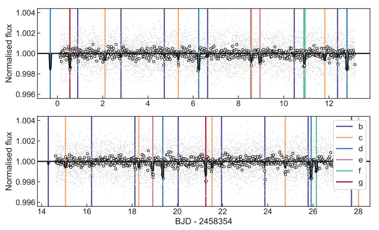
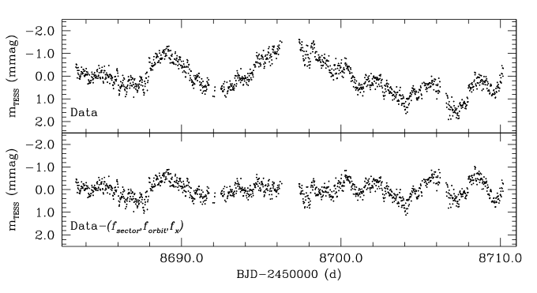

STATUS UPDATE: The Cycle 4 Call for Proposals has officially closed!
Welcome TESS followers to this weeks news bulletin! This week we present three papers from the archive, enjoy!
Six transiting planets and a chain of Laplace resonances in TOI-178 (Leleu et. al., 2021):
TOI-178 is an important planetary system with a possible 2:3:3 resonance. Resonant systems are fundamentally important as their fragile orbital configuration implies that there has been no significant scattering or collisional event since early formation, and as such these systems aid us in our understanding of multi-planet formation and evolution.
TOI-178 was first observed by TESS in its second sector, these data have been used in conjunction with data from CHEOPS, ESPRESSO, NGTS, and SPECULOOS in order to obtain a better understanding of the orbital architecture. The work conducted by the authors demonstrates that there are at least six planets in the system, ranging from super-Earths to mini-Neptunes, with radii from 1.152-2.87 REarth, and periods of 1.91-20.71 days.
Of the six planets, five form a 2:4:6:9:12 chain of Laplace resonances, with densities varying from planet to planet. In this paper the authors have gone on to use Bayesian interior structure retrieval models to show that the amount of gas in the planets does not vary in a monotonous way, which is contrary to simple formation and evolution models and other systems known in a chain of Laplace resonances. Check out this fascinating read for more information.
HD344787: a true Polaris analogue? (Ripepi et. al., 2021):
Classical Cepheids (DCEP's) are known to be powerful distance indicators, but they can also be used to place constraints on the physics of intermediate-mass stars and pulsation theories.
In this paper the authors have investigated DCEP HD 344787, which has the fastest positive period change among it class, along with a quenching amplitude of the light variation.
Using high resolution spectroscopy for this object in addition to Polaris - another famous DCEP, the authors inferred detailed chemical abundances. These results were then compare to TESS HD 344787 photometry.
Through the TESS data the double mode nature of the HD344787 pulsation is confirmed, with a small amplitude. This work indicates that HD 344787 is on the verge of quenching the pulsation. Spectral analysis also indicates that HD 344787 has not gone through its first dredge up as it shows no depletion of carbon and oxygen and is of an almost solar abundance - this is also true for Polaris. Both HD 344787 and Polaris are thought to be at their first crossing of the instability strip.
Nigraha: Machine-learning based pipeline to identify and evaluate planet candidates from TESS (Rao et. al., 2021)
This paper presents a new pipeline called Nigraha which uses a combination of transit finding, supervised machine learning, and detailed vetting to identify with high confidence the few planet candidates missed by prior searches and techniques. The pipeline focuses on high signal to noise ratio, shallow transits, that could represent more Earth-like planets. Full details of the pipeline are provided in addition to the supervised machine learning model, and source code. The pipeline has detected 38 planet candidates in the seven sectors investigated, these too will be released to the public.

Fig 1. Taken from Leleu et. al., (2021). The light curves from TESS Sector 2 and described in sections 2 and 4.1.1 of the paper. The un-binned data is given via the grey points, and data in 30-minute bins are shown as black circles. The best fitting transit model for the system is shown in black. The positions of the transits are marked with lines colored according to the legend. The photometry before and after the mid-sector gap are shown in the top and bottom panels, respectively. The first transit of planet f (thick teal line) occurred precisely between the two transits of the similarly sized planet g (period of 20.71 d - red lines), the three transits were originally thought to have arisen due to a single planet, which was originally designated TOI-178.02 with a period of 10.35 d.

Fig 2. Taken from Ripepi et. al., (2021). The TESS light curve of HD344787, as derived from the full-frame images with the FITSH differential image photometry pipeline. The top panel shows the light curve in mmag after subtracting the average value (mT ES S =8.1055 mag); the bottom panel shows the light curve after re-moving the first three instrumental frequencies.